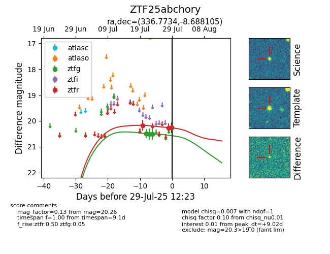

Target ZTF25abchory at 2025-07-23 11:52, see:
FINK: fink-portal.org/ZTF25abchory
Lasair: lasair-ztf.lsst.ac.uk/objects/ZTF25abchory
ALeRCE: alerce.online/object/ZTF25abchory
alt names
ZTF25abchory (ztf,fink)
coordinates:
equatorial (ra, dec) = (336.7734,-8.68810)
galactic (l, b) = (54.4727,-51.24729)
photometry
last ztfg=20.51, ztfr=20.17
2 ztfg, 1 ztfr detections
